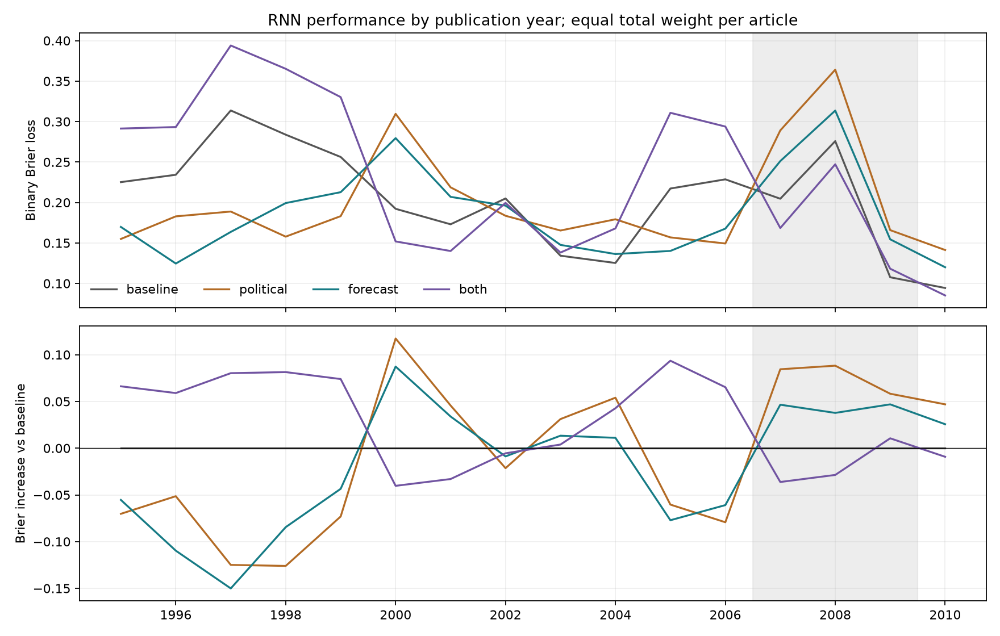
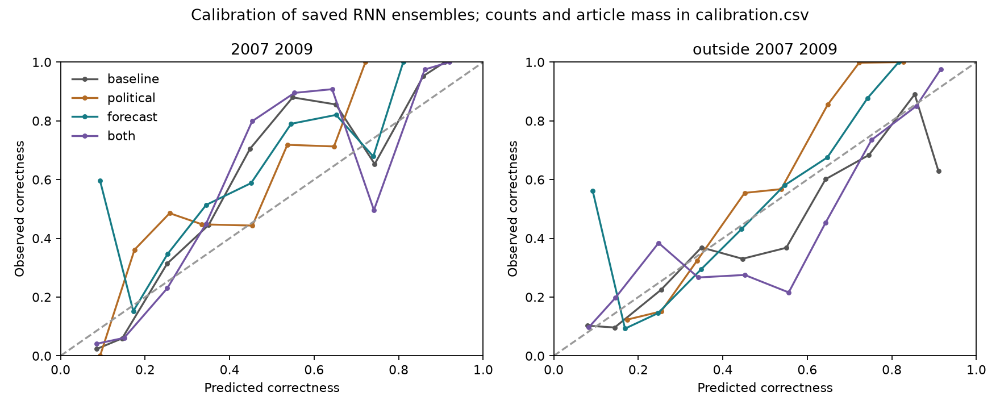

RNN error and stability audit
Saved predictions only: no training, tuning, source validation or modern scoring. This audit examines 56,807 test claims from 1995–2010 under legacy deterministic scoring rules.
Political polarization alone hurts the 2007–2009 cohort across all three training seeds. Its deterioration is not an increase in ≥90%-confidence errors. Both features together behave differently: their ensemble improves during 2007–2009 but worsens outside those years. These comparisons cannot identify causal effects or uniquely separate added features from neural training variation.
Each test article retains total weight one. Subgroup rates use the original article weights; they are not reweighted to equal articles within each subgroup. Contributions are weighted loss differences divided by full-test article mass and add exactly to the overall change. Positive increases mean worse performance. The 2007–2009 label identifies publication years, not every claim’s outcome window.

Period results
| scope |
arm |
n_claims |
n_articles |
brier |
accuracy |
mean_probability |
hit_prevalence |
high_confidence_claims |
high_confidence_wrong_mass_share |
| all |
baseline |
56807 |
24938 |
0.1929 |
0.6897 |
0.4064 |
0.4088 |
2582 |
0.0044 |
| all |
political |
56807 |
24938 |
0.2144 |
0.6652 |
0.3610 |
0.4088 |
1 |
0.0000 |
| all |
forecast |
56807 |
24938 |
0.1997 |
0.6926 |
0.3874 |
0.4088 |
19 |
0.0002 |
| all |
both |
56807 |
24938 |
0.1991 |
0.6743 |
0.4033 |
0.4088 |
3596 |
0.0048 |
| 1995_2006 |
baseline |
31326 |
13715 |
0.2099 |
0.6604 |
0.4152 |
0.3544 |
696 |
0.0067 |
| 1995_2006 |
political |
31326 |
13715 |
0.1929 |
0.6902 |
0.3524 |
0.3544 |
0 |
0.0000 |
| 1995_2006 |
forecast |
31326 |
13715 |
0.1903 |
0.7161 |
0.3834 |
0.3544 |
12 |
0.0003 |
| 1995_2006 |
both |
31326 |
13715 |
0.2306 |
0.6106 |
0.4107 |
0.3544 |
1842 |
0.0077 |
| 2007_2009 |
baseline |
19950 |
8777 |
0.1938 |
0.6826 |
0.3951 |
0.4989 |
663 |
0.0007 |
| 2007_2009 |
political |
19950 |
8777 |
0.2684 |
0.5701 |
0.3535 |
0.4989 |
1 |
0.0000 |
| 2007_2009 |
forecast |
19950 |
8777 |
0.2365 |
0.6041 |
0.3784 |
0.4989 |
6 |
0.0002 |
| 2007_2009 |
both |
19950 |
8777 |
0.1817 |
0.7153 |
0.3904 |
0.4989 |
602 |
0.0012 |
| 2010 |
baseline |
5531 |
2446 |
0.0944 |
0.8795 |
0.3979 |
0.3910 |
1223 |
0.0049 |
| 2010 |
political |
5531 |
2446 |
0.1413 |
0.8669 |
0.4362 |
0.3910 |
0 |
0.0000 |
| 2010 |
forecast |
5531 |
2446 |
0.1200 |
0.8788 |
0.4422 |
0.3910 |
1 |
0.0002 |
| 2010 |
both |
5531 |
2446 |
0.0851 |
0.8844 |
0.4079 |
0.3910 |
1152 |
0.0018 |
| outside_2007_2009 |
baseline |
36857 |
16161 |
0.1924 |
0.6936 |
0.4126 |
0.3599 |
1919 |
0.0064 |
| outside_2007_2009 |
political |
36857 |
16161 |
0.1851 |
0.7169 |
0.3650 |
0.3599 |
0 |
0.0000 |
| outside_2007_2009 |
forecast |
36857 |
16161 |
0.1797 |
0.7408 |
0.3923 |
0.3599 |
13 |
0.0003 |
| outside_2007_2009 |
both |
36857 |
16161 |
0.2086 |
0.6520 |
0.4103 |
0.3599 |
2994 |
0.0068 |
Where the overall difference comes from
| group |
article_mass |
brier_increase_vs_baseline |
contribution_to_total_brier_increase |
| 1995–2006 / employment |
1295.2377 |
-0.0124 |
-0.0006 |
| 1995–2006 / general_business |
8505.0823 |
-0.0176 |
-0.0060 |
| 1995–2006 / markets |
2702.6477 |
-0.0362 |
-0.0039 |
| 1995–2006 / prices |
1212.0323 |
0.0247 |
0.0012 |
| 2007–2009 / employment |
1258.8894 |
0.0622 |
0.0031 |
| 2007–2009 / general_business |
5244.1760 |
0.1011 |
0.0213 |
| 2007–2009 / markets |
1332.3192 |
0.0524 |
0.0028 |
| 2007–2009 / prices |
941.6155 |
-0.0250 |
-0.0009 |
| 2010 / employment |
465.6512 |
0.0510 |
0.0010 |
| 2010 / general_business |
1335.1439 |
0.0558 |
0.0030 |
| 2010 / markets |
385.2762 |
0.0277 |
0.0004 |
| 2010 / prices |
259.9288 |
0.0224 |
0.0002 |
Calibration

High confidence means max(p, 1−p) ≥ 0.9. Low frequency of very confident mistakes does not establish good calibration or discrimination. Calibration bins have different sample support; inspect their counts before interpreting the curves.
Seed stability
| scope |
arm |
seed |
brier |
brier_increase_vs_same_seed_baseline |
| all |
political |
11 |
0.2136 |
0.0089 |
| all |
political |
29 |
0.2152 |
0.0310 |
| all |
political |
47 |
0.2179 |
0.0136 |
| all |
forecast |
11 |
0.2098 |
0.0051 |
| all |
forecast |
29 |
0.1939 |
0.0098 |
| all |
forecast |
47 |
0.2153 |
0.0111 |
| all |
both |
11 |
0.2046 |
-0.0002 |
| all |
both |
29 |
0.2037 |
0.0196 |
| all |
both |
47 |
0.2080 |
0.0037 |
| 2007_2009 |
political |
11 |
0.2721 |
0.0827 |
| 2007_2009 |
political |
29 |
0.2721 |
0.0813 |
| 2007_2009 |
political |
47 |
0.2631 |
0.0518 |
| 2007_2009 |
forecast |
11 |
0.2577 |
0.0682 |
| 2007_2009 |
forecast |
29 |
0.2070 |
0.0162 |
| 2007_2009 |
forecast |
47 |
0.2616 |
0.0504 |
| 2007_2009 |
both |
11 |
0.1824 |
-0.0071 |
| 2007_2009 |
both |
29 |
0.1976 |
0.0068 |
| 2007_2009 |
both |
47 |
0.1898 |
-0.0215 |
All three seeds are retained. Matching a seed does not make neural initialization identical after changing input dimensions. These are descriptive stability checks, not independent replications or estimates of the causal contribution of each feature.
Supplementary tables
Annual, topic, newspaper, numeric-horizon bucket, exported horizon basis, period-by-topic contributions, feature shifts, confidence by actual outcome, and validation-selected epochs are exported alongside this report. Numeric or ‘stated’ exported horizons remain machine labels, not source-validated explicit horizons.
Existing paired intervals remain in the polarization results. Only four five-year test blocks are available; the 2007–2009 subset does not provide enough independent eras for a precise block interval. No new significance claim is inferred from these subgroup tables. They do not justify another round of tuning on the same test years.